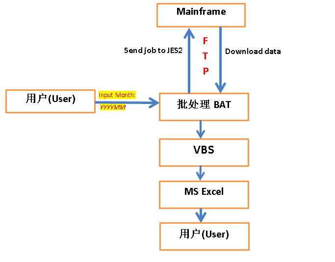
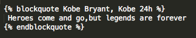

VB Script现学现用
这几天需要实现一个报表自动化的功能，用到批处理BAT和VBS的知识，属于现学现用。各种谷歌百度。都说好记性不如烂笔头，我打算花一篇的篇幅来记录用到的VB Script知识，另外用一篇的篇幅来记录用到的BAT批处理知识。希望可以积少成多。
(注意：VBS跟VBA不是一个概念，VBA只有在开启Excel的时候才能运行。)
dim user_id, yyyymm, to_dte_ '定义变量
user_id = wscript.arguments(0) '接收批处理传过来的第一个参数
CAP_user_id = Ucase(user_id) '转换成大写
Select Case Mid(yyyymm,5,2) 'Select/Case的用法 和 字符串截取的方法
Case "01"
' do something here
Case "02" 'If-Then的用法，闰年的判断方法，=,<>,Mod的用法 ...mainframe平台报表自动化方案实现
这几天，客户提了一个需求如下：
<1>每个月初需要在本地(Windows XP)看上一个月的一个报表。
<2>如果可以随时查看之前任意月份的报表，那更好。
<3>报表数据来源于Mainframe上的表A和表B,需要join操作。
<4>报表结果以excel呈现，有必要的一些格式化和公式以及美化等excel常规操作。
经研究，实现方案如下：
<1>用bat批处理与mainframe交互，交互方式为ftp。包括将本地job送到JES2运行，包括将表A和表B的数据从mainframe上下载到本地。
<2>用vbs处理后期的excel，包括数据导入，单元格格式，公式操作，excel美化，用户提示等等常规的office操作。
<3>用bat批处理来调用vbs，这样bat批处理就把mainframe和vbs串在了一起。
方案优势：
选择这个方案是从用户易用性考虑，客户不需要安装任何软件。批处理和vbs以及excel在xp下面都是自带的。用户只需双击，然后输入查看的报表月份即可。
方案设计图
我用word简单地画了一个方案图：

代码就不放上来了。
JCL中执行如何SQL
平常我们用第三方软件来对DB2操作，比如eclipse,比如DBedit,又或者是mainframe上面的软件，如Filemanager,SPUFI等。
那怎么在JCL里面运行SQL呢？答案是利用IKJEFT01。
//***************************************************************
//*UNLOAD: unload data using IKJEFT01 via dynamic SQL in JCL *
//***************************************************************
//UNLOAD EXEC PGM=IKJEFT01,DYNAMNBR=20
// INCLUDE MEMBER=XXXXSRUN
// INCLUDE MEMBER=XXXXLOAD
//SYSTSPRT DD SYSOUT=*
//SYSUDUMP DD SYSOUT=*
//SYSPRINT DD SYSOUT=*
//SYSREC00 DD DSN=IBMUSER.SQL.OUTPUT,
// DISP=(NEW ...SYNCSORT将PD格式转换成CSF(FS)格式
客户要求看实时报表，可是从数据库导出来的数据却包含如下所示的显示不怎么友好的数据，这时可以用SORT来转换成客户想要的格式。
转换之前的文件用HEX ON命令显示如下。可以看出后面三个字段都是PD类型的，并且都占据8位长度。
VIEW IBMUSER.DFSORT.PDTOCSF.SORTIN Columns 00001 00045
Command ===> HEX ON Scroll ===> CSR
=COLS> ----+----1----+----2----+----3----+----4----+
****** ***************************** Top of Data ******************************
000001 AAAA,20130102,1,MD, à? , é , ? & i
CCCC6FFFFFFFF6F6DC600001670600512110600705380
1111B20130102B1B44B0000440CB0013100CB0003049C
----------------------------------------------------
000002 BBBB,20130102,2,MD, , è?íaà ...Watir给Amazon.cn充礼品卡
写个脚本去尝试不花钱给自己的Amazon.cn账号充礼品卡，碰碰运气。
#encoding: UTF-8 #添加这一行才可以处理中文
require 'rubygems' #gem install xxx --no-ri --no-rdoc
require 'timeout'
require 'watir-webdriver'
def randCharOfLength(len) #产生随机任意长度的数
chars = ("a".."z").to_a + ("A".."Z").to_a + ("0".."9").to_a
str = ""
1.upto(len) {|i| str << chars[rand(chars.size-1)]}
return str
end
b = Watir::Browser.new(:firefox ...Watir获得sedo网站上指定后缀域名列表
作为一个’米农‘，sedo.com网站上面的信息很有价值。sedo.com是全球最大的域名交易网站。下面我写的这个脚本是用来取得sedo上面指定后缀(_如.asia)的所有域名列表。
#encoding: UTF-8 #添加这一行才可以处理中文
require 'rubygems' #gem install xxx --no-ri --no-rdoc
require 'timeout'
require 'watir-webdriver'
#b=Watir::Browser.new(:firefox, {:profile => 'default'})
output =File.new("sedo_asia.txt",'w:UTF-8')
def pre_work()
$b=Watir::Browser.new :ff
$b.driver.manage.timeouts.implicit_wait ...Rexx调用Skeleton JCL提交job的例子
这个例子一共包含3个部分
Rexx主程序：IBMUSER.REXX.EXEC(MYSKELE)
带参数的sekleton JCL：IBMUSER.REXX.SKELL(JCLSKEL)
最终生成的Dynamic JCL：IBMUSER.DYNAM.JCL(SUBJCL)
File Edit Edit_Settings Menu Utilities Compilers Test Help
VIEW IBMUSER.REXX.SKELL(JCLSKEL) - 01.06 Columns 00001 00072
Command ===> Scroll ===> CSR
****** ***************************** Top of Data ******************************
000001 //&JOBNAME JOB '000000000000000000CMP',
000002 // CLASS=3,NOTIFY ...ISPF Dialog 开发知识点
需要用ISPF来开发带界面的自动化工具，从0开始。记下些很有用的知识点：
- 执行命令
Panelid可以得到当前ISPF panel的名字 - 执行
7.2这个命令输入panel名字，可以用来刷新你新写的panel，使改 动动态生效，这样就不需要重启TN3270 terminal达到测试panel改动的目的 - ISPF中用
option 7.3可以查看Z开头ISPF系统预留的变量 - 执行命令
3.9查看ISPF所有可用的command - 知道任意一个panel的名字，如何得到其定义的路径？这里是很好的方法
- To assign a null value or blank value to a dialog variable, use the system variable &Z.
)SET D = &Z ...
Octopress写博客常用语法总结
自从博客从Wordpress迁徙到Octopress来，也有一段时间了。该是时候总结一下常用的语法了。
插入图片

插入链接
[链接描述](链接地址)
插入代码
方法一

方法二
用3个反引号括起来

引用的用法
用blockquote关键字

引用的效果如下：
Heroes come and go,but legends are forever
特殊反白显示
用反单引号括起来即可，比如Octopress
`Octopress`
显示“点击阅读全文”
Step01: 在_config.yml里面设置如下：excerpt_link: "点击阅读全文 →"
效果如下：

就先说这些octopress语法，剩下的基本就是跟Markdown语法相关的了，不写在这里。
more ...IBM DebugTool中巧用GOTO调试程序
最近接触IBM DebugTool比较多，再说一个在mainframe上面调试COBOL或者PL/I程序的技巧吧。
经常在用IBM DebugTool或者DTCN调试程序的时候，造测试数据很不容易。如果调试过程中发现这次数据没有造成功，我们没有必要每次都退出全部程序重新造数据，可以巧妙地利用“GOTO”语句，随心所欲地在程序里面跳转。
比如下面这一个程序段，在调试过程中我们可以在Call黑盒子程序BLACKBOX的前后都设置一个断点，即9178行以及9202行都设置一个断点，如果我们发现程序跑到了9202行但是返回码不是我们想要的结果，那么运行“GOTO 9178” 即可重新回到Call黑盒子之前，无限反复尝试，重新造数据，直到成功！
SOURCE: TESTPGM1 --1----+----2----+----3----+----4----+----5 LINE: 9178 OF 15895
0020 01 WS-FIELDS.
0021 05 WS-CALLED-PGM ...